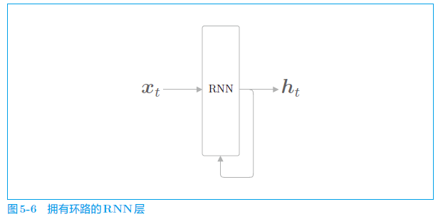
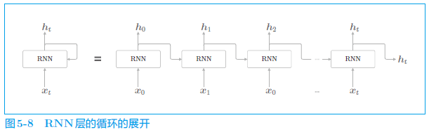
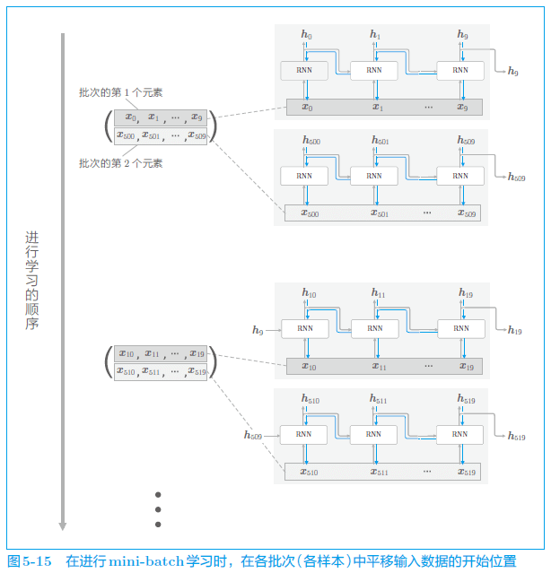
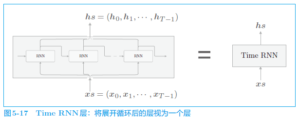
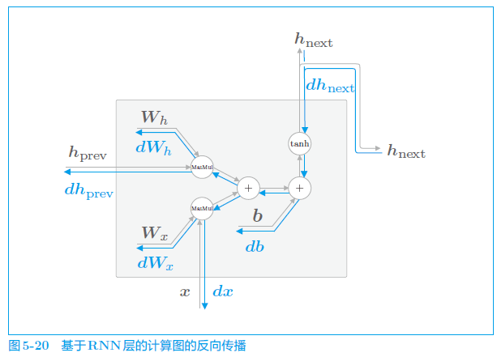
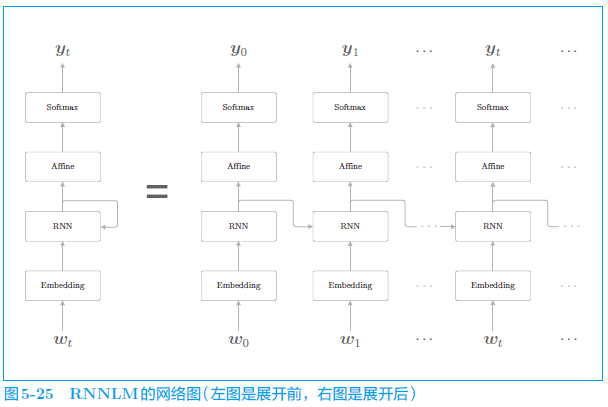
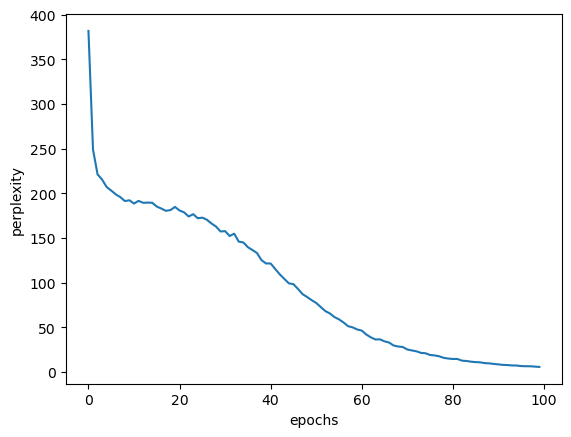

前言
虽然前馈网络结构简单、易于理解，但是可以应用于许多任务中。不过，这种网络存在一个大问题，就是不能很好地处理时间序列数据（以下简称为“时序数据”）。更确切地说，单纯的前馈网络无法充分学习时序数据的性质（模式）。于是，**RNN（Recurrent Neural Network，循环神经网络）**便应运而生。
正文
5.1 概率和语言模型
5.1.1 概率视角下的 word2vec
复习一下 word2vec 的 CBOW 模型。这里，我们来考虑由单词序列 表示的语料库，将第 个单词作为目标词，将它左右的（第 个和第 个）单词作为上下文。
用数学式来表示“当给定 和 时目标词是 的概率”：
CBOW 模型的损失函数：
5.1.2 语言模型
**语言模型（language model）**给出了单词序列发生的概率。
由 表示的模型称为条件语言模型（conditional language model），有时也将其称为语言模型。
5.1.3 将 CBOW 模型用作语言模型？
我们将上下文限定为左侧的 2 个单词。如此一来，就可以用 CBOW 模型（CBOW 模型的后验概率）近似表示。
在机器学习和统计学领域，经常会听到“马尔可夫性”（或者“马尔可夫模型”“马尔可夫链”）这个词。马尔可夫性是指未来的状态仅依存于当前状态。此外，当某个事件的概率仅取决于其前面的 N 个事件时，称为“N 阶马尔可夫链”。这里展示的是下一个单词仅取决于前面 2 个单词的模型，因此可以称为“2 阶马尔可夫链”。
5.2 RNN
5.2.1 循环的神经网络
RNN 的特征就在于拥有这样一个环路（或回路）。这个环路可以使数据不断循环。通过数据的循环，RNN 一边记住过去的数据，一边更新到最新的数据。
{kind=link}

5.2.2 展开循环
{kind=link}

各个时刻的 RNN 层接收传给该层的输入和前一个 RNN 层的输出，然后据此计算当前时刻的输出，此时进行的计算可以用下式表示：
RNN 的 存储“状态”，时间每前进一步（一个单位），它就以上式的形式被更新。许多文献中将 RNN 的输出 称为隐藏状态（hidden state）或隐藏状态向量（hidden state vector），本书中也是如此。
5.2.3 Backpropagation Through Time
将循环展开后的 RNN 可以使用（常规的）误差反向传播法。换句话说，可以通过先进行正向传播，再进行反向传播的方式求目标梯度。因为这里的误差反向传播法是“按时间顺序展开的神经网络的误差反向传播法”，所以称为 Backpropagation Through Time（基于时间的反向传播），简称BPTT。
5.2.4 Truncated BPTT
在处理长时序数据时，通常的做法是将网络连接截成适当的长度。具体来说，就是将时间轴方向上过长的网络在合适的位置进行截断，从而创建多个小型网络，然后对截出来的小型网络执行误差反向传播法，这个方法称为 Truncated BPTT（截断的 BPTT）。
Truncated 是“被截断”的意思。Truncated BPTT 是指按适当长度截断的误差反向传播法。
5.2.5 Truncated BPTT 的 mini-batch 学习
{kind=link}

通过 Truncated BPTT 进行学习的例子，对长度为 1000 的时序数据，以时间长度 10 为单位进行截断。此时，如何将批大小设为 2 进行学习呢？在这种情况下，作为 RNN 层的输入数据，第 1 笔样本数据从头开始按顺序输入，第 2 笔数据从第 500 个数据开始按顺序输入。也就是说，将开始位置平移 500。
5.3 RNN 的实现
{kind=link}

{kind=link}

class RNN:
def __init__(self, Wx, Wh, b):
self.params = [Wx, Wh, b]
self.grads = [np.zeros_like(Wx), np.zeros_like(Wh), np.zeros_like(b)]
self.cache = None
def forward(self, x, h_prev):
"""
x: 从下方输入的数据
h_prev: 从左边输入的数据
"""
Wx, Wh, b = self.params
t = np.dot(h_prev, Wh) + np.dot(x, Wx) + b
h_next = np.tanh(t)
self.cache = (x, h_prev, h_next)
return h_next # 当前时刻的 RNN 层的输出（= 下一时刻的 RNN 层的输入）是 h_next
def backward(self, dh_next):
Wx, Wh, b = self.params
x, h_prev, h_next = self.cache
dt = dh_next * (1 - h_next ** 2)
db = np.sum(dt, axis=0)
dWh = np.dot(h_prev.T, dt)
dh_prev = np.dot(dt, Wh.T)
dWx = np.dot(x.T, dt)
dx = np.dot(dt, Wx.T)
self.grads[0][...] = dWx
self.grads[1][...] = dWh
self.grads[2][...] = db
return dx, dh_prev5.3.2 Time RNN 层的实现
Time RNN 层是 T 个 RNN 层连接起来的网络。我们将这个网络实现为 Time RNN 层。这里，RNN 层的隐藏状态 h 保存在成员变量中。
class TimeRNN:
def __init__(self, Wx, Wh, b, stateful=False):
"""
layers: 在列表中保存多个 RNN 层
h: 保存调用 forward() 方法时的最后一个 RNN 层的隐藏状态
"""
self.params = [Wx, Wh, b]
self.grads = [np.zeros_like(Wx), np.zeros_like(Wh),
np.zeros_like(b)]
self.layers = None
self.h, self.dh = None, None
self.stateful = stateful
def set_state(self, h):
self.h = h
def reset_state(self):
self.h = None
def forward(self, xs):
Wx, Wh, b = self.params
N, T, D = xs.shape
D, H = Wx.shape
self.layers = []
hs = np.empty((N, T, H), dtype='f')
if not self.stateful or self.h is None:
self.h = np.zeros((N, H), dtype='f')
for t in range(T):
layer = RNN(*self.params)
self.h = layer.forward(xs[:, t, :], self.h)
hs[:, t, :] = self.h
self.layers.append(layer)
return hs
def backward(self, dhs):
Wx, Wh, b = self.params
N, T, H = dhs.shape
D, H = Wx.shape
dxs = np.empty((N, T, D), dtype='f')
dh = 0
grads = [0, 0, 0]
for t in reversed(range(T)):
layer = self.layers[t]
dx, dh = layer.backward(dhs[:, t, :] + dh) # 求和后的梯度
dxs[:, t, :] = dx
for i, grad in enumerate(layer.grads):
grads[i] += grad
for i, grad in enumerate(grads):
self.grads[i][...] = grad
self.dh = dh
return dxs5.4 处理时序数据的层的实现
我们将基于 RNN 的语言模型称为 RNNLM（RNN Language Model，RNN 语言模型）
5.4.1 RNNLM 的全貌图
{kind=link}

5.4.2 Time 层的实现
实现为了 Time RNN 层，这里也同样使用 Time Embedding 层、Time Affine 层等来实现整体处理时序数据的层。
5.5 RNNLM 的学习和评价
5.5.1 RNNLM 的实现
import sys
sys.path.append('..')
import numpy as np
from common.time_layers import *
class SimpleRnnlm:
def __init__(self, vocab_size, wordvec_size, hidden_size):
V, D, H = vocab_size, wordvec_size, hidden_size
rn = np.random.randn
# 初始化权重
embed_W = (rn(V, D) / 100).astype('f')
rnn_Wx = (rn(D, H) / np.sqrt(D)).astype('f')
rnn_Wh = (rn(H, H) / np.sqrt(H)).astype('f')
rnn_b = np.zeros(H).astype('f')
affine_W = (rn(H, V) / np.sqrt(H)).astype('f')
affine_b = np.zeros(V).astype('f')
# 生成层
self.layers = [
TimeEmbedding(embed_W),
TimeRNN(rnn_Wx, rnn_Wh, rnn_b, stateful=True),
TimeAffine(affine_W, affine_b)
]
self.loss_layer = TimeSoftmaxWithLoss()
self.rnn_layer = self.layers[1]
# 将所有的权重和梯度整理到列表中
self.params, self.grads = [], []
for layer in self.layers:
self.params += layer.params
self.grads += layer.grads
def forward(self, xs, ts):
for layer in self.layers:
xs = layer.forward(xs)
loss = self.loss_layer.forward(xs, ts)
return loss
def backward(self, dout=1):
dout = self.loss_layer.backward(dout)
for layer in reversed(self.layers):
dout = layer.backward(dout)
return dout
def reset_state(self):
self.rnn_layer.reset_state()5.5.2 语言模型的评价
**困惑度（perplexity）**常被用作评价语言模型的预测性能的指标。困惑度表示“概率的倒数”（这个解释在数据量为 1 时严格一 致）。
“模型 1”能准确地预测，困惑度是 1.25；“模型 2”的预测未能命中，困惑度是 5.0。此例表明，困惑度越小越好。
在输入数据为多个时：
：数据量
：one-hot 向量形式的正确解标签
：第 个数据的第 个值
：概率分布（神经网络中的 Softmax 的输出）
5.5.3 RNNLM 的学习代码
下面，我们使用 PTB 数据集进行学习，不过这里仅使用 PTB 数据集（训练数据）的前 1000 个单词。这是因为在本节实现的 RNNLM 中，即便使用所有的训练数据，也得不出好的结果。
import sys
sys.path.append('..')
import matplotlib.pyplot as plt
import numpy as np
from common.optimizer import SGD
from dataset import ptb
# 设定超参数
batch_size = 10
wordvec_size = 100
hidden_size = 100
time_size = 5 # Truncated BPTT 的时间跨度大小
lr = 0.1
max_epoch = 100
# 读入训练数据（缩小了数据集）
corpus, word_to_id, id_to_word = ptb.load_data('train')
corpus_size = 1000
corpus = corpus[:corpus_size]
vocab_size = int(max(corpus) + 1)
xs = corpus[:-1] # 输入
ts = corpus[1:] # 输出（监督标签）
data_size = len(xs)
print('corpus size: %d, vocabulary size: %d' % (corpus_size, vocab_size))
# 学习用的参数
max_iters = data_size // (batch_size * time_size)
time_idx = 0
total_loss = 0
loss_count = 0
ppl_list = []
# 生成模型
model = SimpleRnnlm(vocab_size, wordvec_size, hidden_size)
optimizer = SGD(lr)
# 计算读入 mini-batch 的各笔样本数据的开始位置
jump = (corpus_size - 1) // batch_size
offsets = [i * jump for i in range(batch_size)]
for epoch in range(max_epoch):
for iter in range(max_iters):
# 获取 mini-batch
batch_x = np.empty((batch_size, time_size), dtype='i')
batch_t = np.empty((batch_size, time_size), dtype='i')
for t in range(time_size):
for i, offset in enumerate(offsets):
batch_x[i, t] = xs[(offset + time_idx) % data_size]
batch_t[i, t] = ts[(offset + time_idx) % data_size]
time_idx += 1
# 计算梯度，更新参数
loss = model.forward(batch_x, batch_t)
model.backward()
optimizer.update(model.params, model.grads)
total_loss += loss
loss_count += 1
# 各个 epoch 的困惑度评价
ppl = np.exp(total_loss / loss_count)
print('| epoch %d | perplexity %.2f'
% (epoch+1, ppl))
ppl_list.append(float(ppl))
total_loss, loss_count = 0, 0
# 绘制图形
x = np.arange(len(ppl_list))
plt.plot(x, ppl_list, label='train')
plt.xlabel('epochs')
plt.ylabel('perplexity')
plt.show()corpus size: 1000, vocabulary size: 418
| epoch 1 | perplexity 381.82
| epoch 2 | perplexity 249.18
| epoch 3 | perplexity 221.29
| epoch 4 | perplexity 215.43
| epoch 5 | perplexity 207.15
| epoch 6 | perplexity 203.17
| epoch 7 | perplexity 198.93
| epoch 8 | perplexity 195.85
| epoch 9 | perplexity 191.45
| epoch 10 | perplexity 192.29
| epoch 11 | perplexity 188.65
| epoch 12 | perplexity 191.66
| epoch 13 | perplexity 189.51
| epoch 14 | perplexity 189.71
| epoch 15 | perplexity 189.52
| epoch 16 | perplexity 185.28
| epoch 17 | perplexity 183.06
| epoch 18 | perplexity 180.49
| epoch 19 | perplexity 181.37
| epoch 20 | perplexity 184.87
| epoch 21 | perplexity 180.87
| epoch 22 | perplexity 178.83
| epoch 23 | perplexity 174.18
| epoch 24 | perplexity 176.73
| epoch 25 | perplexity 172.20
| epoch 26 | perplexity 172.87
| epoch 27 | perplexity 170.56
| epoch 28 | perplexity 166.38
| epoch 29 | perplexity 162.95
| epoch 30 | perplexity 157.38
| epoch 31 | perplexity 157.81
| epoch 32 | perplexity 152.31
| epoch 33 | perplexity 154.94
| epoch 34 | perplexity 146.07
| epoch 35 | perplexity 145.13
| epoch 36 | perplexity 139.85
| epoch 37 | perplexity 136.63
| epoch 38 | perplexity 133.32
| epoch 39 | perplexity 125.23
| epoch 40 | perplexity 121.62
| epoch 41 | perplexity 121.58
| epoch 42 | perplexity 115.46
| epoch 43 | perplexity 109.48
| epoch 44 | perplexity 104.39
| epoch 45 | perplexity 99.35
| epoch 46 | perplexity 98.50
| epoch 47 | perplexity 93.12
| epoch 48 | perplexity 87.29
| epoch 49 | perplexity 84.13
| epoch 50 | perplexity 80.55
| epoch 51 | perplexity 77.43
| epoch 52 | perplexity 72.89
| epoch 53 | perplexity 68.34
| epoch 54 | perplexity 65.69
| epoch 55 | perplexity 61.66
| epoch 56 | perplexity 59.06
| epoch 57 | perplexity 55.59
| epoch 58 | perplexity 51.44
| epoch 59 | perplexity 50.10
| epoch 60 | perplexity 47.76
| epoch 61 | perplexity 46.54
| epoch 62 | perplexity 42.07
| epoch 63 | perplexity 38.95
| epoch 64 | perplexity 36.56
| epoch 65 | perplexity 36.69
| epoch 66 | perplexity 34.47
| epoch 67 | perplexity 33.12
| epoch 68 | perplexity 29.81
| epoch 69 | perplexity 28.68
| epoch 70 | perplexity 28.15
| epoch 71 | perplexity 25.35
| epoch 72 | perplexity 24.31
| epoch 73 | perplexity 23.32
| epoch 74 | perplexity 21.55
| epoch 75 | perplexity 21.12
| epoch 76 | perplexity 19.21
| epoch 77 | perplexity 18.71
| epoch 78 | perplexity 17.76
| epoch 79 | perplexity 16.01
| epoch 80 | perplexity 15.20
| epoch 81 | perplexity 14.74
| epoch 82 | perplexity 14.76
| epoch 83 | perplexity 12.86
| epoch 84 | perplexity 12.45
| epoch 85 | perplexity 11.71
| epoch 86 | perplexity 11.20
| epoch 87 | perplexity 10.99
| epoch 88 | perplexity 10.09
| epoch 89 | perplexity 9.84
| epoch 90 | perplexity 9.20
| epoch 91 | perplexity 8.68
| epoch 92 | perplexity 8.12
| epoch 93 | perplexity 7.94
| epoch 94 | perplexity 7.49
| epoch 95 | perplexity 7.43
| epoch 96 | perplexity 6.77
| epoch 97 | perplexity 6.63
| epoch 98 | perplexity 6.58
| epoch 99 | perplexity 6.19
| epoch 100 | perplexity 5.84
{kind=link}

5.5.4 RNNLM 的 Trainer 类
-
按顺序生成 mini-batch
-
调用模型的正向传播和反向传播
-
使用优化器更新权重
-
评价困惑度
5.6 小结
-
RNN 具有环路，因此可以在内部记忆隐藏状态
-
通过展开 RNN 的循环，可以将其解释为多个 RNN 层连接起来的神经网络，可以通过常规的误差反向传播法进行学习（= BPTT）
-
在学习长时序数据时，要生成长度适中的数据块，进行以块为单位的 BPTT 学习（= Truncated BPTT）
-
Truncated BPTT 只截断反向传播的连接
-
在 Truncated BPTT 中，为了维持正向传播的连接，需要按顺序输入数据
-
语言模型将单词序列解释为概率
-
理论上，使用 RNN 层的条件语言模型可以记忆所有已出现单词的信息